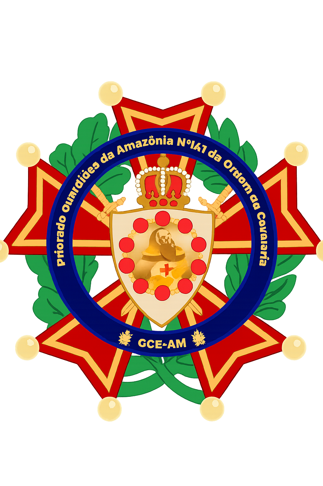

História do Priorado Guardiões da Amazônia nº. 141

Priorado de Nobres Cavaleiros: Comendadores da Luz nº. 141
Primeira Loja Patrocinadora: Grande Impetoria Litúrgica do Amazonas (GILAM)
Atual Loja Patrocinadora: G∴ B∴ L∴ S∴ Firmeza e Renascença nº. 37 (GLOMAM)
Data de Fundação: 05/09/2007
Data de Instalação: 06/06/2008
Primeiro Ilustre Comendador Cavaleiro: Hygor Goellner
História
A Ordem DeMolay no Amazonas sempre buscou crescimento intelectual e moral de seus membros, e com o desenvolvimento e acontecimentos de muitas melhorias que vinham acontecendo na Ordem DeMolay, o sonho de trazer a Ordem da Cavalaria para o Amazonas foi aumentando! Um Projeto de termos um Capítulo Priorado nasceu e se tornou realidade.
A Ordem da Cavalaria Amazonense foi uma grande novidade para os DeMolays e Maçons naquele momento, houveram muitos momentos de adequações para seu funcionamento, seja no aspecto estrutural, manutenção, e upgrades de muitas novidades que estavam surgindo no aspecto Nacional e Internacional como as "Sublimes Ordens" pro nosso Amazonas.
Ilustres Comendadores Cavaleiros
- 2026 - Gabriel Dias Rejtman
- 2025 - João Paulo Sena
- 2024 - Edward Guimarães
- 2023 - Salomão Moreira
- 2022 - Jhuan Leite
- 2021 - Jhuan Leite
- 2020 - Gabriel Ronnier
- 2020 - Vinícius Dutra
- 2019 - Guilherme Calixto
- 2018 - Gabriel Rodrigues
- 2017 - Victor Ordozgoite
- 2016 - Jonathan Santiago
- 2015 - Luis Felipe Maia
- 2015 - João Paulo Borges Borba
- 2014 - Raphael Holanda
- 2013 - Raphael Holanda
- 2012 - Raphael Holanda
- 2011 - Raphael Holanda
- 2010 - Leonardo Nogueira
- 2009 - Hygor Goellner
- 2008 - Hygor Goellner